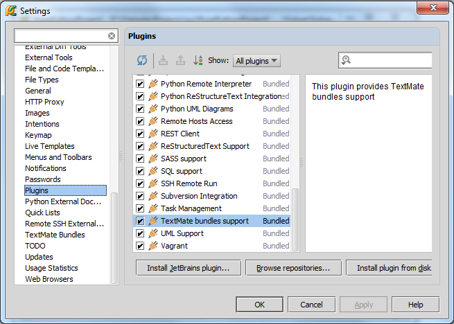
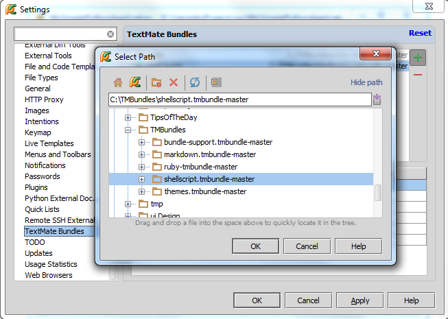
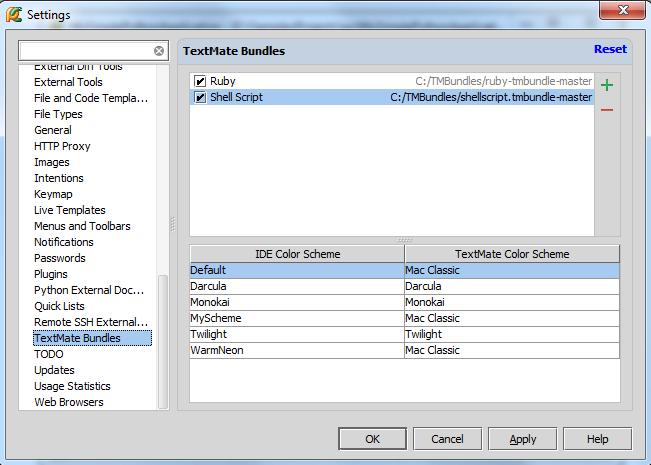
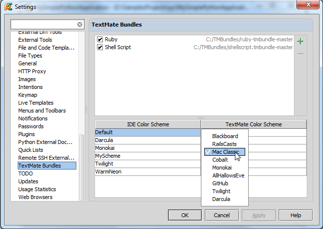
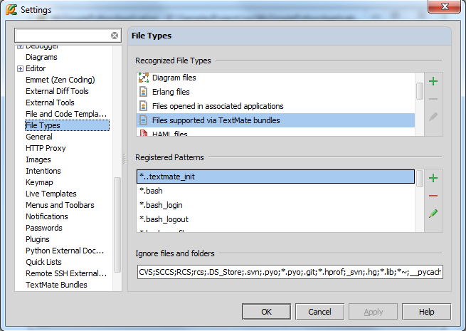
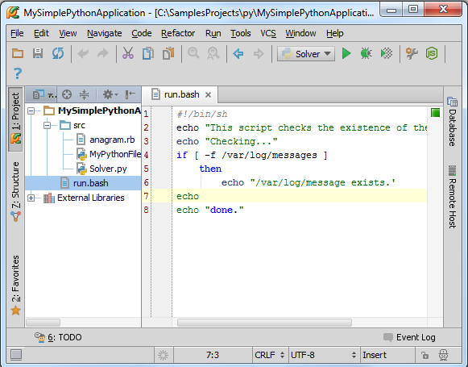

1、主题
介绍如何在Pycharm中使用TextMate来格式化编辑各种代码文件
2、准备工作
（1）已经下载了相关捆绑软件，如 GitHub或者Subversion
（2）Pycharm版本为2.7或更高
（3）TextMate bundles support插件正常工作。打开设置对话框，在 IDE Settings节点下，单击Plugins页，勾选对应插件复选框：

3、导入捆绑软件集合
假设你希望使用高亮语法来编辑 Shell Script文件，此时需要先下载Shell Script TextMate Bundle，然后导入。
在主工具栏单击设置按钮，在IDE Settings节点下单击TextMate Bundles，在 TextMate Bundles区域单击绿色加号，定位待加载路径：

单击OK按钮，Shell Script出现在绑定列表且本地路径可见：

默认主题方案为 Mac Classic，可以单击对应表单进行更改：

4、增加文件类型
大部分TextMate绑定本身已经添加了很多文件扩展，当然我们可以继续增加它。
在设置对话框单击 File Types，在页面的Recognized File Types区域，定于到 Files supported via TextMate Bundles选项，在下方的Registered Patterns中，显示了当前绑定所支持的所有文件类型。单击绿色加号，在Add Wildcard对话框中执行添加操作。

单击OK按钮关闭设置对话框。
5、测试
这里有一个测试脚本：
